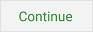

Connected
Once a connection with Google Drive is established, you will be
prompted to continue with cloud data storage setup:
 Touching
the "Continue" button will save your grocery list as
"grocerygopher.db" to cloud storage in either one of two
methods:
- If "grocerygopher.db" doesn't exist in the cloud, then the
file will be created from your current grocery list and the
Sharing and Synchronizing dialog will open. This typically
will be done the first time you setup Google Drive storage.
- If there already exists a "grocerygopher.db" file, then the
Uploading/Downloading dialog will open asking you to choose
whether to copy the cloud file to your device or to upload and
replace the cloud file with your grocery list. This
usually happens when you are sharing your grocery list with a
new device and would typically choose to download the cloud
file.
 Pressing the
"Cancel" button disables use of Google Drive and returns you to the
Settings menu.
Pressing the
"Cancel" button disables use of Google Drive and returns you to the
Settings menu.